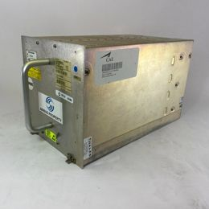

Ingénieur Méthodes Industrialisation
méthodes industrielles
Ingénieur • 2026
Ingénieur Méthodes pour une chaîne d'assemblage de calculateurs de vol d'avions civils :
- Rédaction de fiches d'instruction à destination des opérateur.
- Conception des outillages pour la chaîne d'assemblage.
Suivi du développement des prototypes de calculateurs de vol :
- Passerelle entre le bureau de développement et les électroniciens réalisant les opérations de modification des cartes électroniques.
- Téléchargement des logiciels dans les cartes avec mise en évidences des bugs.

Industrialization Methods Engineer
industrial methods
Engineer • 2026
Methods Engineer for an assembly line of flight computers for civil aircraft:
- Writing instruction sheets for operators.
- Design of tooling for the assembly line.
Monitoring the development of flight computer prototypes:
- Interface between the development office and the electronics technicians carrying out modification operations on electronic boards.
- Software uploading to the boards with bug identification.
Ingeniero de Métodos de Industrializacións
métodos industriales
Ingeniero • 2026
Ingeniero de Métodos para una línea de ensamblaje de computadoras de vuelo para aviones civiles:
- Redacción de instrucciones de trabajo para los operadores.
- Diseño de utillajes para la línea de ensamblaje.
Seguimiento del desarrollo de prototipos de computadoras de vuelo:
- Enlace entre la oficina de desarrollo y los técnicos electrónicos encargados de las operaciones de modificación de las tarjetas electrónicas.
- Carga del software en las tarjetas con identificación de errores.
Industrialisierungs-Methodeningenieur
industrielle Methoden
Ingenieur • 2026
Methodeningenieur für eine Montagelinie von Flugcomputern für zivile Flugzeuge:
- Erstellung von Arbeitsanweisungen für die Bediener.
- Konstruktion von Vorrichtungen für die Montagelinie.
Betreuung der Entwicklung von Prototypen für Flugcomputer:
- Schnittstelle zwischen der Entwicklungsabteilung und den Elektroniktechnikern, die Änderungen an elektronischen Leiterplatten durchführen.
- Aufspielen der Software auf die Leiterplatten mit Identifizierung von Fehlern.